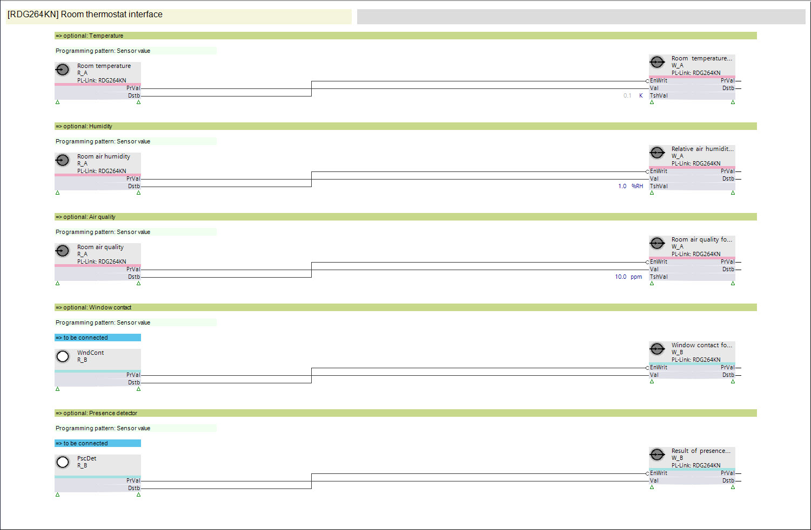
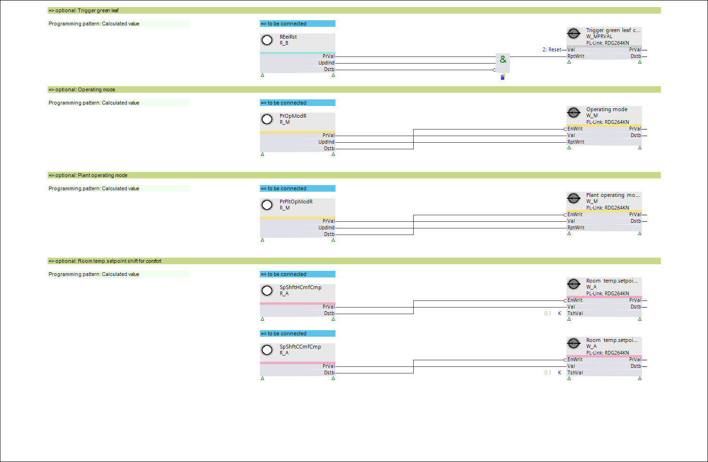

设备图表示例 RDG264KN
Example of the device chart RDG264KN
RDG264KN 的已编程设备图表的示例和布局，根据现场设备目录中的实例与配置对齐。
- Read function blocks from the PL-Link device
The read function blocks to the left are pre-assigned to the corresponding BACnet objects of the PL-Link device or prepared for a manual assignment. - Write / command function blocks to the PL-Link device
The write / command function blocks to the right are all pre-assigned to the corresponding BACnet objects of the PL-Link device. - Read / command function blocks from/to the plant
The read / command function blocks in the middle are prepared to be manually assigned to the corresponding plant BACnet objects.


The same layout is applied correspondingly to all PL-Link instances in the Field Device Catalog.